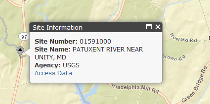
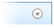
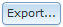
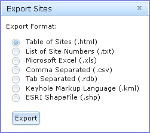
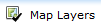
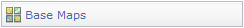
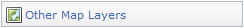
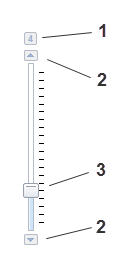
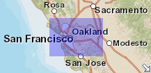

National Water Information System: Map View
How To Use the Map View
This interface provides a map view of the locations of sites found using a search of USGS water data.Site Types and Activity Status
|
The National Water Information System (NWIS) provides access to data at over 1.5 million sites. There are 56 possible site types used in the NWIS data base, including 14 primary types and 42 secondary types. To simplify mapping of the site locations for most practical applications, the site types are displayed in 5 groups that include the following primary and secondary types. The full list of site types can be found here.
Sites may be active or inactive. The active/inactive status is determined by local USGS Water Science Centers. In most cases, sites designated as active will have current water data, but in some cases a site may also be considered active if it is part of an ongoing occasional data-collection program. Shapes and colors are used to indicate the type of data collected at sites. Black triangles and gray colors represent surface-water sites, black dots and red colors represent groundwater sites, black dots with a tail and purple colors represent springs, black diamonds and blue colors represent atmospheric sites, and open circles and green colors represent all other site types. |


Selecting a Site and Getting Data
|  |
Selecting (clicking) the site will identify it by site number and name. A link is also provided to access any available data from the National Water Information System. |
Viewing a List of Displayed Sites
A list of all sites that are shown in the map view is available in the the information panel to the left of the map. The panel can be made hidden from view by clicking on . The list can be exported in several formats, and includes links to access any available data from the National Water Information System.
Exporting Site List
|  |
Site information can be exported in the following formats listed below. The Table of Sites will be displayed directly in the web broswer, and all other formats are exported as a zipped data package that contains three files: (1) Readme.txt, which describes the contents of the data package, (2) Metadata.txt, which provides the specifications for the retrieval, such as creation date, time, bounding coordinates, and other information about the map view, (3) NWISMapperExport.nnn, which is the actual list of sites in the requested export format, where nnn is the file type suffix listed below.
|
Map Layers - Background Views

Base Maps
|
The default background view is an ESRI Streets map. Several background map types are available and can be selected using the Base Maps selection under the Map Tools tab. More information on each base map is available at ESRI Map Services. All uses of ESRI base maps are subject to their Terms of Use. All uses of MicroSoft Bing maps are subject to their Terms of Use. Note that background views are appropriate to and will vary with map scale. Not all views are available at all scales, particularly when zoomed in very close to a location. | |||||
Other Map Layers
|
Several additional layers of information are available to complement the display of sites using the Map Layers selection under the Map Layers tab. Note that map layer views are appropriate to and will vary with map scale. |
 USGS National Hydrography
USGS National Hydrography  Water Scence Center
Water Scence Center  Field Office
Field Office Navigating in ESRI Maps
You can navigate (move your view) in two dimensions in any ESRI Map. To pan (move the map), do one of the following:- Click and hold the mouse buttons to drag the map
- Press the up arrow on your keyboard to move north
- Press the down arrow on your keyboard to move south
- Press the right arrow on your keyboard to move east
- Press the left arrow on your keyboard to move west
Using the Navigation Controls
|  | On-screen zoom controls are shown on the left. Zoom controls include:
Additional controls are described below and are provided to set the function of the cursor and to select map views.
|
Using the Overview Map
|  |
The overview map (shown left here) appears in the bottom right corner of the map. It helps to orient you by showing the location of current map view in the context of a larger geographical area. The area currently displayed in the map is show as a purple box in the overview map. At any time, click to hide the overview map or click to display it again. As you pan or zoom in the map, the overview map view changes accordingly. You can change the existing view in the map by doing one of the following:
|